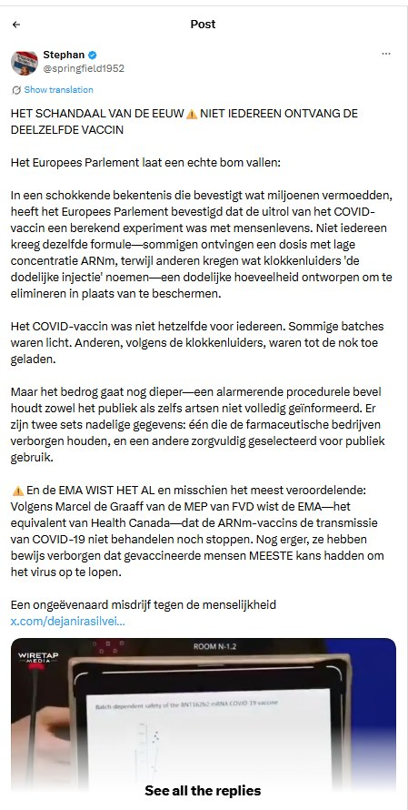
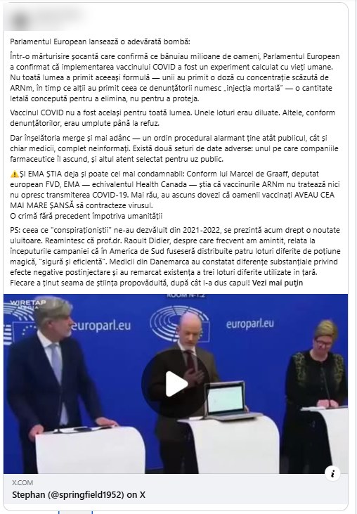
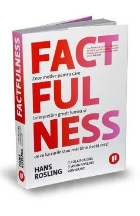
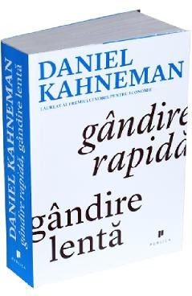
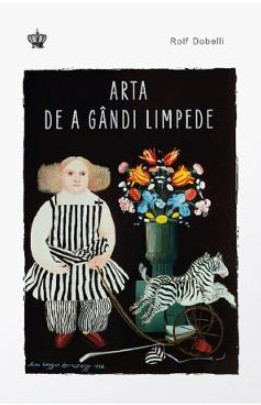

Ai primit și tu mesajul despre „injecția letală”? Ți s-a spus că „Parlamentul European a recunoscut”? Dar cine, exact, a recunoscut? Răspunsul: 8 din cei 705 europarlamentari, la o conferință de presă din noiembrie 2023. Restul e un fals reciclat în 2026 și tradus automat în cel puțin 4 limbi, inclusiv în română.


E o traducere fidelă a textului olandez. A păstrat chiar și comparația cu „Health Canada”, o instituție canadiană, ceea ce arată că mesajul a fost scris inițial pentru un public nord-american. Noutatea e un post-scriptum cu două afirmații noi:
„Patru loturi diferite” în America de Sud, atribuită prof. Didier Raoult: nu am găsit nicio declarație care să o susțină. Producătorii nu livrează loturi cu compoziție diferită, iar în UE fiecare lot e controlat de producător și apoi de un laborator oficial, înainte de folosire.
„Trei loturi diferite” în Danemarca: studiul danez a împărțit loturile în trei grupuri după numărul de raportări primite. E o grupare statistică, nu trei formule diferite de vaccin.
Mesajul recunoaște singur că e reciclat: post-scriptumul spune că informația, cunoscută „din 2021–2022”, „se prezintă acum drept o noutate”. Asta contrazice „mărturisirea șocantă” din primul rând.
La baza scării stă un singur fapt: un studiu danez din 2023 a observat diferențe între loturi în raportările spontane de reacții adverse, nu în compoziția vaccinului. Autorii au cerut studii suplimentare.
Studiul mare care a urmat (Statens Serum Institut: 52 de loturi, aproape 10 milioane de vaccinări) nu a găsit diferențe relevante clinic. Nici Institutul Paul-Ehrlich din Germania nu a găsit creșteri legate de anumite loturi.
Fiecare treaptă de deasupra adaugă intenție și gravitate fără nicio dovadă nouă.
| # | Afirmația | Sâmburele real | Ce e fals | Verdict |
|---|
Fiecare bucată are un sâmbure de adevăr. Povestea întreagă e falsă.
Trei cărți care explică de ce astfel de mesaje funcționează atât de bine și cum îți antrenezi reflexul de a verifica.

Hans Rosling
De ce cifrele absolute ne păcălesc (ca la afirmația „vaccinații se infectau cel mai des”) și cum citești o statistică fără filtrul știrilor alarmiste.
Găsește cartea →
Daniel Kahneman
De ce majusculele, ⚠️ și „SCANDALUL SECOLULUI” ne fac să distribuim înainte să gândim: sistemul rapid decide, cel lent nici nu apucă să verifice.
Găsește cartea →
Rolf Dobelli
Capitole scurte despre erorile de gândire din acest mesaj: autoritatea falsă, confirmarea a „ce bănuiam deja”, efectul de grup.
Găsește cartea →Verdictul acestui articol nu depinde de cărțile recomandate. Linkurile spre cărți sunt linkuri de afiliere: prețul e același pentru tine, iar ÎncăUnCapitol primește un comision mic.
Ai găsit o greșeală sau o sursă pe care n-am văzut-o? Scrie-ne la office@gherasimmarius.com. Corectăm vizibil, cu data corecturii, în josul articolului.
O recomandare bună, direct în inbox. Lunar, o carte aleasă cu grijă și noile articole „Fapte, nu impresii”.
Mă abonez →Publicat pe 23 noiembrie 2026. Nicio corectură până acum.